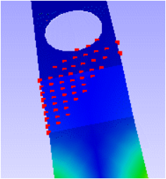
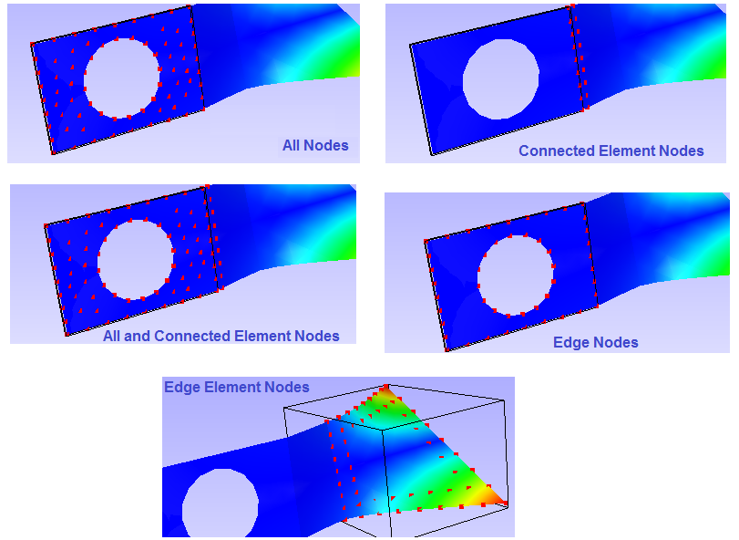

Nodeset Manager¶
This module helps user to group set of nodes, name it and use it in different other modules. It reduces significant time in selection of nodes for different purposes.
What is Node Set?
Node Set is a group of nodes selected by user and associated with a name given by user.
What can be done with a Node Set?
can be used for masking color plot
can be used for vector plot
can be used for XYPlot
can be masked for hotspot finder
Node Set Manager Panel
Creator Tab
Selection using mouse |
|
Rectangle |
Allows user to select nodes by user window |
Point |
Allows user to select nodes by picking |
Polygon |
Allows user to select nodes by user polygon |
Box |
Allows user to select a region by mouse and modify the box dimensions. |
Visible Surface |
A filter option to ignore hidden nodes. |
Get Probe Label Nodes |
Selects all visible probed node IDs. |
Bound Box |
A bound box with given distance is considered at each probe label. All nodes within each box are considered for node set. |
Selection using highlighted parts |
|
Selection Parts |
User can choose any one of the following options.
|
Get Nodes |
Gets filtered nodes according to the selected constraint. |
Selection using current selected nodes |
|
Replace Current |
Clears existing nodes and considers new neighborhood or proximity nodes. |
Element |
Considers adjacent element instead of adjacent nodes |
Get Adjacent Nodes |
Appends immediate adjacent nodes of current nodes. |
Range |
Proximity radius value of Node or element. |
Element Proximity |
A On/Off flag for Element or nodal proximity. |
Get Proximity Nodes |
Appends nodes within the proximity range. |
From Resut Range… |
Pops up result range dialog, user can select scalar result and set range. This function selects all the nodes those scalar result value falls within the user range. |
Node set Name |
Name of the new node set. |
Create |
Creates a node set with user defined name and final nodes displayed currently. |
Clear |
Clears displayed nodes. |
Manager Tab

The various fields available in the Manager tab are explained below.
Model |
Selects a CAE Model |
List Box |
Lists all node set names corresponding to the model |
Show |
Check/Uncheck to show/hide |
Node set |
Node set name mask for hotspot finder or color plot |
Mask Type |
Allows user to select mask type. (Inside or Outside or None are the types) |
Color |
Display color of the node set |
Color Mask |
Masking the node sets in contour. |
Hotspot Mask |
Masking the node sets in finding hotspots. |
Show NodeSet Parts Only |
Displays parts associated with nodesets. And Hides other parts. |
Hide NodeSet Parts |
Just hides the parts associated with the nodeset. |
Edit |
Allows user to edit the nodeset. |
Delete |
Delete all selected node sets. |
Types of Color Mask
VCollab provides following types in color masking.
None - No masking
No Result - Masking region will be in ‘No Result’ color
Cull - Masking region will be culled
Transparent - Masking region will be semi transparent.

Note
Color plot masking is not supported for Elemental result contour.
How to create a Node Set
Selection of Nodes
Click ‘CAE | NodeSet Manager…’ menu item or just click the icon , which pops up a dialog.
Click a mouse selection mode, Rectangle / Point / Polygon.
Rectangle mode
Use left mouse button to drag a window to select nodes.
Use right mouse button to drag window to deselect nodes.
Point mode
Click with mouse left button a node directly to select it.
Click with mouse right button a selected node to deselect it.
Polygon mode
Use left mouse button to start defining a polygon.
Click points on screen to build user polygon.
Use right mouse button click to close polygon.
Now the selected nodes are displayed in viewer.
Use ‘Visible Surface’ option to filter hidden nodes in current view.
Box
Use left mouse to click and drag to define a box.
Each bound plane can be moved in or out using mouse click and drag.
Click the box button again to select nodes within the box. Box will dissappear and nodes will be highlighted.


Appending Nodes from selected parts
Select parts of interest before using this option.
Use ‘All Nodes’ option to get all nodes from the selected parts.
Use ‘Connected Element Nodes’ option to get nodes from the elements which connects selected parts and other parts.
Use ‘All and Connected Element Nodes’ option to get all nodes from selected part and connected element parts.
Use ‘Edge Nodes’ option to get nodes on the feature edges of selected parts. This depends on feature edge crease angle too.
Use ‘Edge Element Nodes’ option to get nodes from the elements of which has at least one feature edge.
Click ‘Get Nodes’ button to append the nodes.

Appending Nodes from probe
Click ‘Add Probe Labels’ button to include all probed nodes.
Use ‘Visible Probe Labels’ option to ignore hidden probe label nodes.
Appending or Replacing selection using ‘From Selected Nodes : Neighbourhood’
Click ‘Get Adjacent Nodes’ button to find adjacent nodes of selected nodes.
Use Proximity Range to find nodes which falls within a given range of selected nodes.( i.e. Nodal Proximity)
Click ‘Element Proximity’ to find nodes which falls within a given range of elements (associated with selected nodes).
Click ‘Get Proximity Nodes’ to append the selection of nodes.
Enable ‘Replace Current’ option will replace the selection instead of appending.
Clearing the selection
Click ‘Clear’ button to clear current selection of nodes.
Repeat the above suggestions to build your selection of nodes again.
Creating Node Set
Enter an unique name to the selection of nodes in text box given
Click ‘Create’ button to create node set and name will be added to the list in the manager tab.
How to manage *Node Set* list?
Make sure that you have created Node Sets already.
Click ‘CAE | NodeSet Manager…’ menu item, which pops up a dialog.
Click Manager tab.
Select CAE model for which node sets are listed.
Select a node set name.
Editing Node Set
Click ‘Edit’ option to modify the nodes.
User can clear and build new node set, Or
User can filter nodes by removing nodes.
Deleting Node Sets
Select a Node Set to be removed.
Click ‘Delete’ button.
Toggling Node Set Attributes
Click ‘Show’ check box in the Node Set list box to turn On / Off its visibility.
Select ‘In’ or ‘Out’ opition in Mask drop down to mask the selected nodes or unselected nodes respectively. Select ‘N/A’ option to exclude from masking.
Click ‘Color’ cell to edit display color of the nodes.
Combination of In and Out masked Nodesets
Nodeset A with In mask type is refered as A
Nodeset A with Out mask type is refered as A’


Node Sets in Hotspot Finder
Note: Masking is not supported for Elemental Result.
User can select multiple Node Sets and can be masked in hotspot finding operation.
Open Hotspot Finder Settings
Click “Mask…” button, which pops up a Nodeset Manager dialog to select or deselect Node Sets.
‘Inverse’ ON will exclude the node sets selected, where as ‘Inverse OFF’ finds hotspots only in the node sets selected.